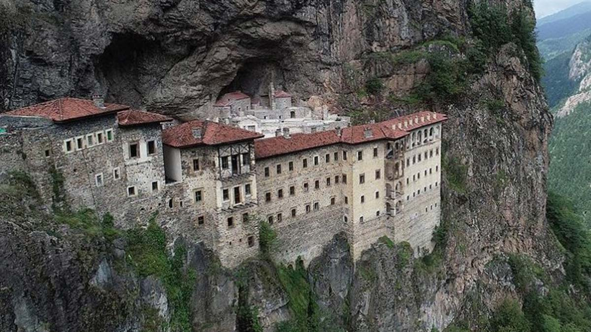
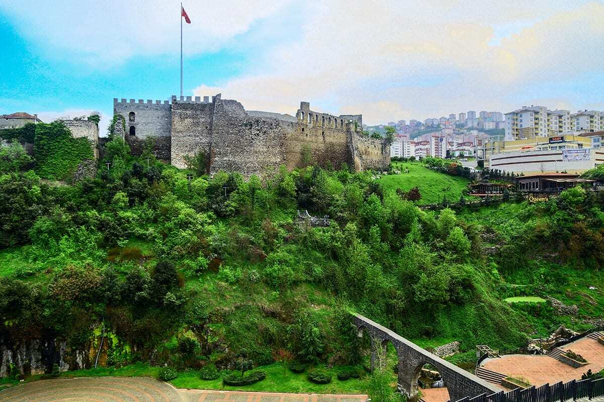
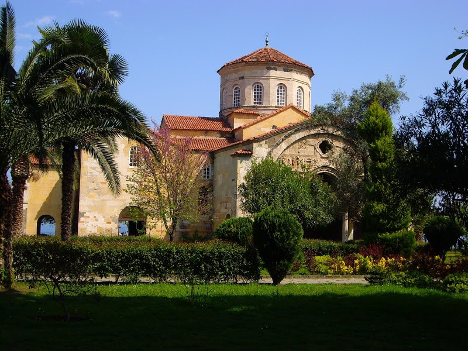
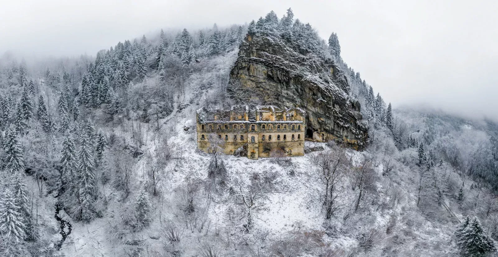

Karadağlar'ın eteklerinde yer alan bu tarihi Rum Ortodoks manastırı, hem konumu hem de freskleriyle dikkat çeker.
Adres: Altındere Vadisi Milli Parkı, Maçka/Trabzon
Ziyaret Saatleri: Her gün 09:00 – 19:00
Giriş: Ücretli (Tam: 450 TL)
Müze Kart: Geçerli

Roma dönemine kadar uzanan geçmişiyle Trabzon Kalesi, şehri yukarıdan seyretmek için harika bir noktadır.
Adres: Zagnos Vadisi Yakını, Ortahisar/Trabzon
Ziyaret Saatleri: Her gün 08:00 – 20:00
Giriş: Ücretsiz
Müze Kart: Gerekli değil

13. yüzyılda Bizans döneminde kilise olarak inşa edilen yapı, günümüzde cami olarak kullanılmaktadır.
Adres: Fatih Mahallesi, Ortahisar/Trabzon
Ziyaret Saatleri: Her gün 08:00 – 19:00
Giriş: Ücretsiz
Müze Kart: Gerekli değil

Trabzon’un Maçka ilçesinde yer alan ve 270 yılında kurulduğu tahmin edilen bu manastır, doğa ve tarih severlerin uğrak noktasıdır.
Adres: Maçka/Trabzon
Ziyaret Saatleri: Gündüz saatlerinde
Giriş: Ücretsiz
Müze Kart: Gerekli değil